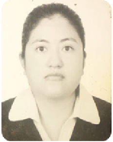

María De Los Ángeles Reyes Rodríguez
Pasante de biología.
Datos personales.
Lugar y fecha de nacimiento: Atizap´n de Zaragoza - 12 de abril 1992
Direcci´n. 2da Cda de Geranios 26 Vista Hermosa. Nicol´s Romero. Estado de Máxico
Teléfono: 5560741149
e-mail:angelesreyesrodriguezmail.com
Formación
Colegio de Ciencias y Humanidades Plantel Naucalpan.

Facultad de Estudios Superiores Iztacala


Carrera de Biología
Cursos.
- Curso de hidroponía tomado en la Facultad de Estudios Superiores Iztacala.
- En línea Introducción al uso y representación de información geoespacial por el centro de investigación de Geografía y Geom´tica.
- En línea ABC para la creación de proyectos culturales.
Introducción a la técnica de cultivo sin suelo hidroponía
Idiomas:
- Inglés básico.
- Comprensión de lectura Fránces
INEGI
Auxiliar Administrativo